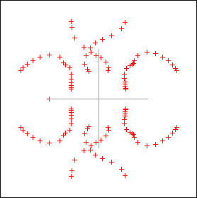
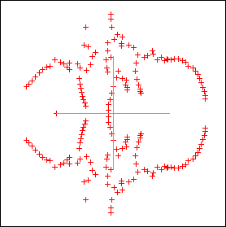
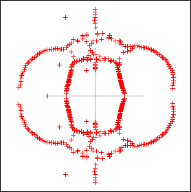
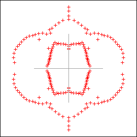
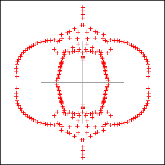
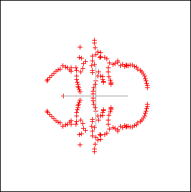
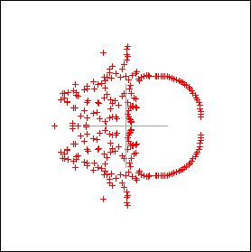
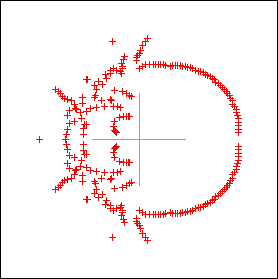
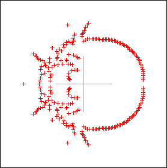

Zero's for various partition functions
Home Page
Set 1: Increase the size of the lattice. Q=2
| 2x2x10 |
3x3x10 |
|  |
 |
|  |
 |
| 4x4x10 |
5x5x10 |
Set 2: RB Pearson's vs Yogi's
|  |
 |
|
Pearsons
|
4x4x6 |
4x4x10 (non periodic) |
Set 3: Increase number of states q, fix lattice size. From left to right Q increase from 2 to 6
 

Set 4: A change of boundary conditions